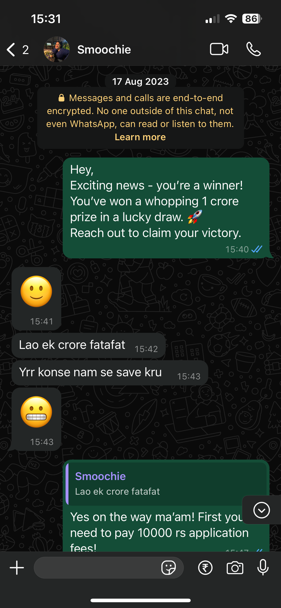
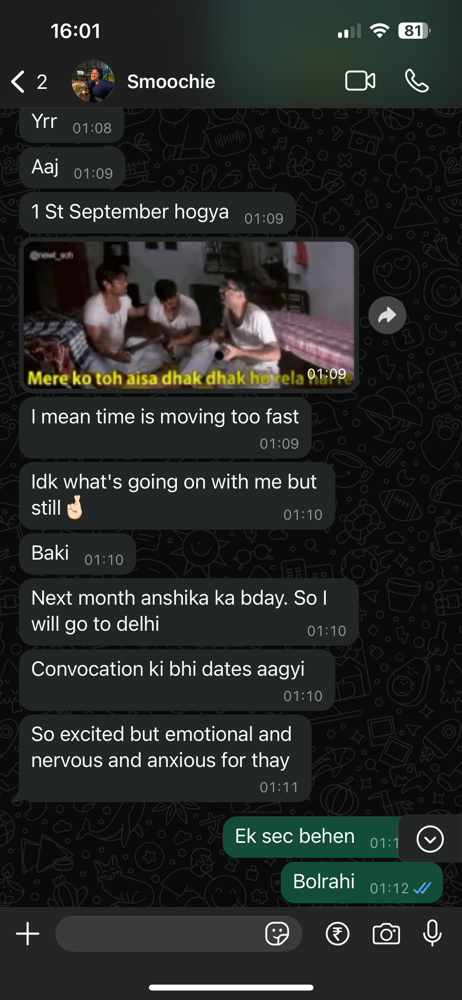
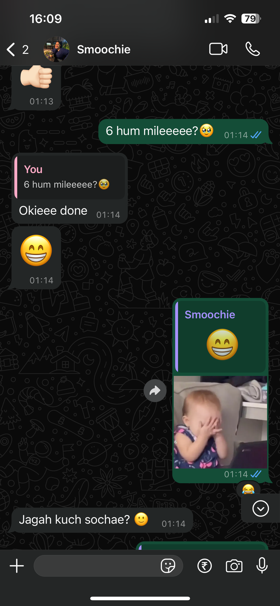
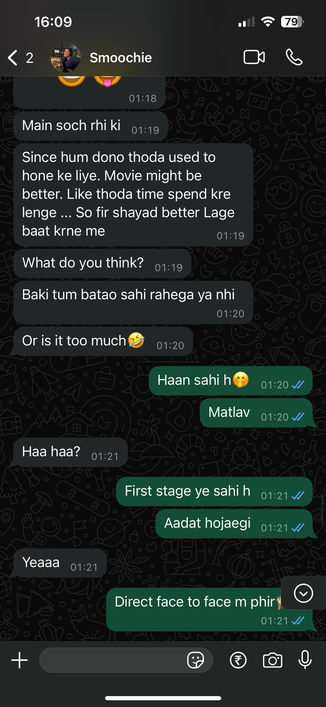
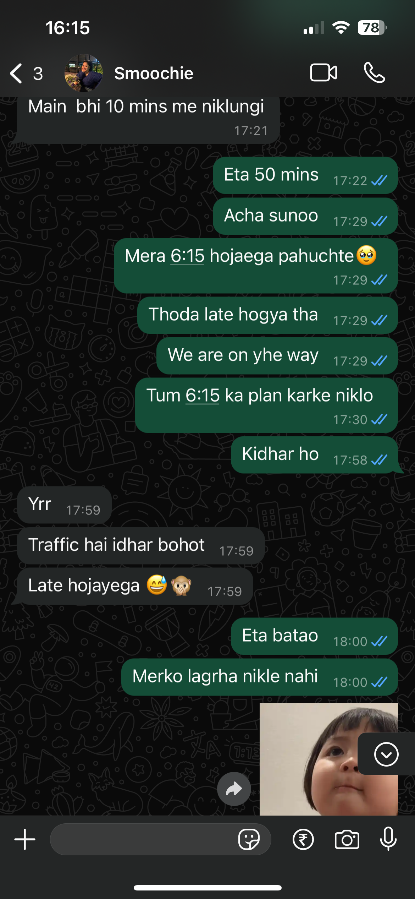
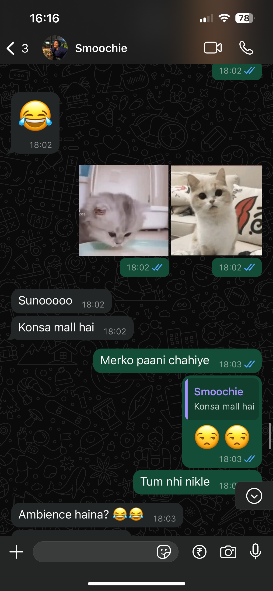
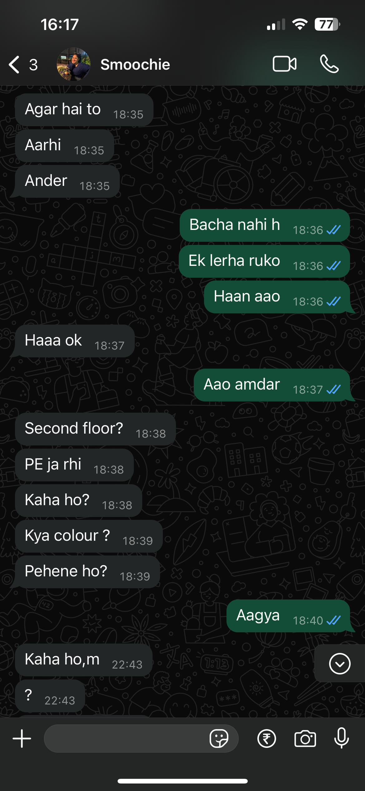

1 July: Matched on Hinge
It all started with that one magical picture from Manali. Aishu's first message—a long, thoughtful introduction—made me feel like the luckiest guy. I thought, "Wow, she's different!" Usually, girls don’t send such long texts, but maybe she liked me a little more than usual! 😉
10 July: Instagram Adventures Begin
We moved to Instagram, and suddenly, nights got shorter because time seemed to disappear while talking. Sharing posts, laughing over memes, sending emojis (except for that thumbs-up—I never liked that one 😂)—it felt like we couldn’t stop.
17 August: The WhatsApp Upgrade
Double trouble! Insta + WhatsApp = non-stop chats. Stickers, emojis, voice notes—it felt like we were texting all day. It was like our own little world, filled with cute stickers and even cuter conversations. 🥰

2 September: Convocation Confirmation
The big news! Aishu confirmed she’d be in Delhi for her convocation. I was doing an internal happy dance—couldn’t wait to see her! 💃🕺

23 September: First Date Set for 6th October
The excitement was real! We finally decided on the day: 6th October. Planning for a movie, I convinced her to watch a horror film. 😜 Everything was set—half-day leave from work, and I was counting down the days!


6 October: The First Date
The day arrived. My heart was racing, and I was excited to finally see her. I left on time (of course!), but Aishu… well, timing wasn’t exactly her thing that day. She didn’t even know which mall to go to, and she was saying she had taken an auto! 😆 She arrived at the mall but wasn’t sure which floor to go to, and I waited downstairs while she looked around. When we finally spotted each other, we exchanged that first look, confirmed it was us, shared a little hug, and went in for the movie.
She watched the movie, and I—well, I watched her and the movie. 😊 Afterward, we headed to a café. I was a little shy at first, but she made it easy. It was one of those days you wish could last longer. And as we booked a cab to head back, I rested my hand on her shoulder, and we talked some more. Time flew by so quickly, and I wondered if she enjoyed it as much as I did... and whether we’d meet again soon. 💖


